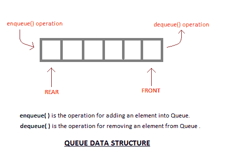
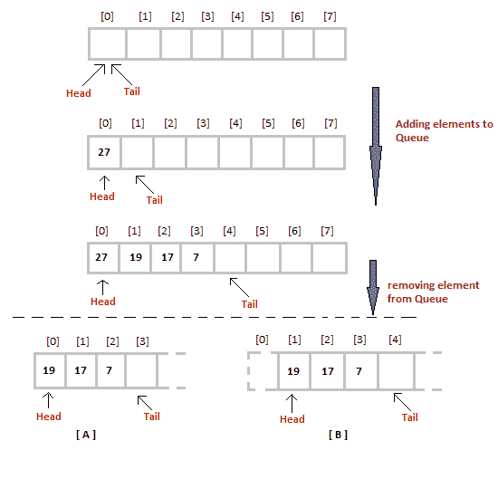

什么是队列数据结构？
原文：https://www.studytonight.com/data-structures/queue-data-structure
Queue 也是抽象数据类型或线性数据结构，就像栈数据结构一样，其中第一个元素从称为 REAR (也称为 tail )的一端插入，现有元素的移除发生在称为 FRONT (也称为 head )的另一端。
在继续阅读队列数据结构之前，请先查看以下主题，以便更好地理解它:
这使得队列成为先进先出(先进先出)数据结构，这意味着首先插入的元素将首先被移除。
这正是队列系统在现实世界中的工作方式。如果你去售票处买电影票，排在第一位，那么你将是第一个拿到票的人。正确队列数据结构也是如此。数据先插入，会先离开队列。
将元素添加到队列中的过程称为入队，将元素从队列中移除的过程称为出队。

队列的基本特征
- 与栈一样，队列也是相似数据类型元素的有序列表。
- 队列是先进先出结构。
- 一旦新元素被插入到队列中，在队列中新元素之前插入的所有元素都必须被移除，以移除新元素。
peek( )函数通常用于返回第一个元素的值，而不将其出队。
队列的应用
队列，顾名思义，每当我们需要按照这样的顺序管理任何一组对象时都会用到，即第一个进来的对象也先出去，而其他对象等待轮到它们，就像在以下场景中一样:
- 在单个共享资源上处理请求，如打印机、中央处理器任务调度等。
- 在现实生活中，呼叫中心电话系统使用队列来保持人们按顺序呼叫他们，直到服务代表空闲。
- 实时系统中中断的处理。中断的处理顺序与它们到达的顺序相同，即先到先得。
队列数据结构的实现
队列可以使用数组、栈或链表来实现。实现队列最简单的方法是使用数组。
最初队列的头(前)和尾(后)指向数组的第一个索引(从0开始数组的索引)。当我们向队列中添加元素时，尾部继续向前移动，始终指向下一个元素将被插入的位置，而头部保持在第一个索引处。

当我们从队列中移除一个元素时，我们可以遵循两种可能的方法(上图中提到的[A]和[B])。在[A]方法中，我们在头位置移除元素，然后一个接一个地向前移动所有其他元素。
在方法[B]中，我们从头位置移除元素，然后将头移动到下一个位置。
在方法[A]中，每次我们移除第一个元素时，都有一个将元素向前移动一个位置的开销。
在方法[B]中没有这样的开销，但是每当我们将头向前移动一个位置时，在移除第一个元素后，队列上的大小每次减少一个空间。
ENQUEUE 操作的算法
- 检查队列是否已满。
- 如果队列已满，则打印溢出错误并退出程序。
- 如果队列未满，则增加尾部并添加元素。
出列操作的算法
- 检查队列是否为空。
- 如果队列为空，则打印下溢错误并退出程序。
- 如果队列不为空，则在头部打印元素并增加头部。
/* Below program is written in C++ language */
#include<iostream>
using namespace std;
#define SIZE 10
class Queue
{
int a[SIZE];
int rear; //same as tail
int front; //same as head
public:
Queue()
{
rear = front = -1;
}
//declaring enqueue, dequeue and display functions
void enqueue(int x);
int dequeue();
void display();
};
// function enqueue - to add data to queue
void Queue :: enqueue(int x)
{
if(front == -1) {
front++;
}
if( rear == SIZE-1)
{
cout << "Queue is full";
}
else
{
a[++rear] = x;
}
}
// function dequeue - to remove data from queue
int Queue :: dequeue()
{
return a[++front]; // following approach [B], explained above
}
// function to display the queue elements
void Queue :: display()
{
int i;
for( i = front; i <= rear; i++)
{
cout << a[i] << endl;
}
}
// the main function
int main()
{
Queue q;
q.enqueue(10);
q.enqueue(100);
q.enqueue(1000);
q.enqueue(1001);
q.enqueue(1002);
q.dequeue();
q.enqueue(1003);
q.dequeue();
q.dequeue();
q.enqueue(1004);
q.display();
return 0;
}
要实现方法[A]，您只需更改dequeue方法，并包含一个for循环，该循环将所有剩余元素移动一个位置。
return a[0]; //returning first element
for (i = 0; i < tail-1; i++) //shifting all other elements
{
a[i] = a[i+1];
tail--;
}
队列操作的复杂度分析
就像栈一样，在队列的情况下，我们确切地知道新元素将被添加到哪个位置以及从哪里移除元素，因此这两个操作都需要一个步骤。
- 入队: O(1)
- 出列: O(1)
- 尺寸: O(1)